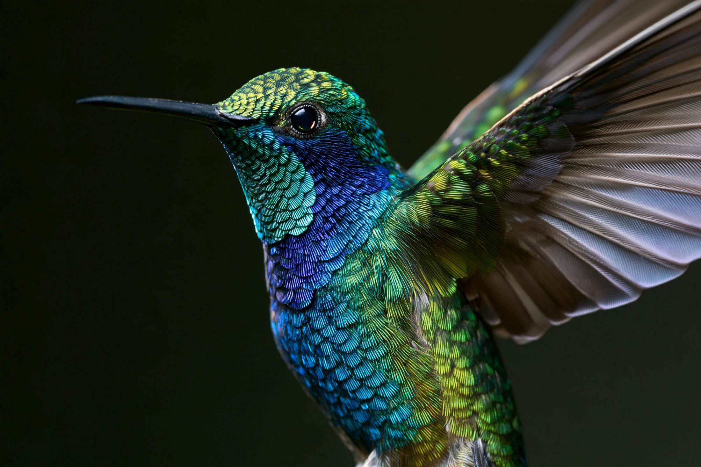
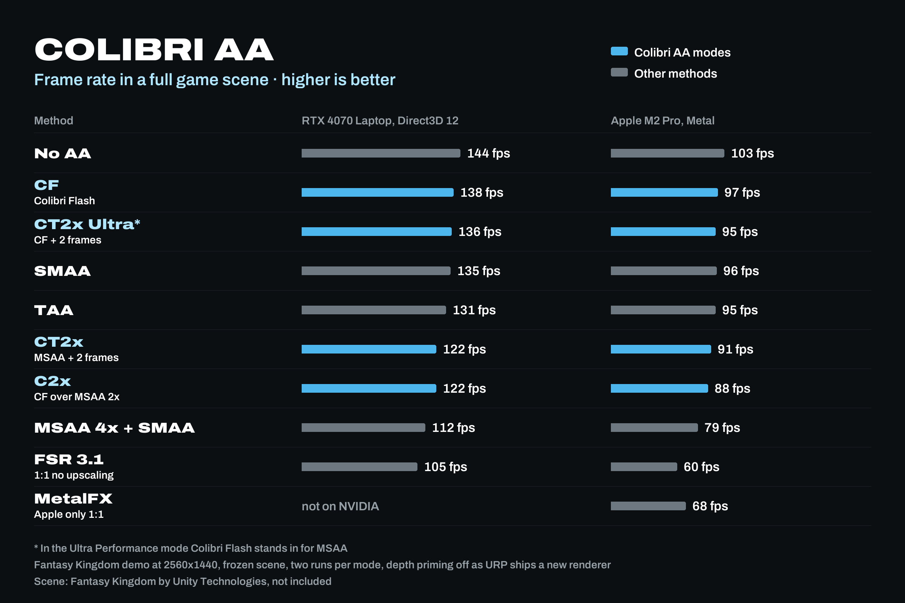
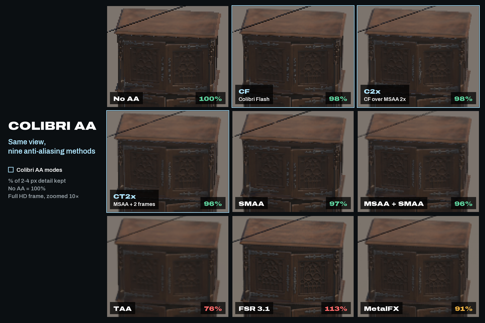
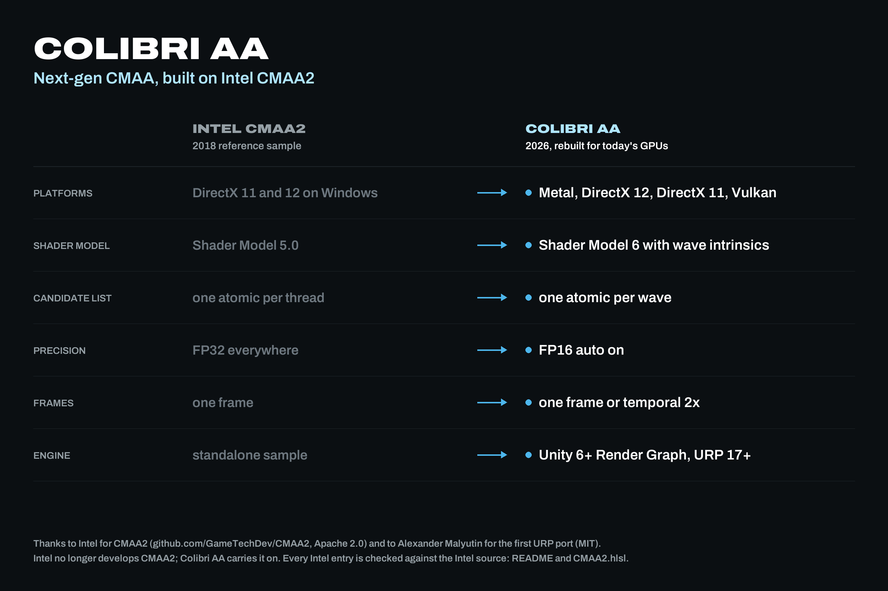
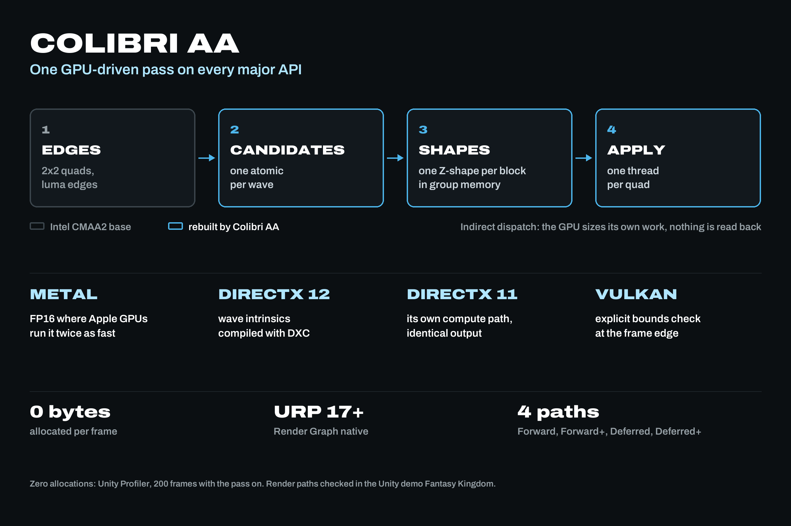

Inside the Unity editor
See Colibri AA at work.
The Colibri window with its settings, our anti-aliasing stress stand, and every mode one after another — what each of them does to grids, thin wires and glossy highlights.

Weightless. Instant. Exact.
Colibri AA is an ultra-fast anti-aliasing suite built on CMAA2. Designed for the sharpest image with no blur, at the highest performance possible.
Unity URP · one switch in the renderer
Ultralight CMAA-based anti-aliasing for Unity URP, built around a simple idea: a cleaner image should keep its character.
Edges, textures, motion — the same scene with the mode changing underneath the loupe: the flag and its rope, the merlons, the window bars. Fantasy Kingdom is a demo scene by Unity Technologies, used for comparison only.

Four anti-aliasing modes
CF Colibri Flash
One pass over the finished frame, with no history kept. Nothing trails behind movement, so it suits fast action and competitive games. Based on CMAA2. Reworked from the ground up.
C2x Flash over MSAA 2×
MSAA draws the thin geometry, Flash finishes the shaded edges. For scenes carried by fences, poles and cables.
CT2x MSAA 2× + two frames
Two frames offset by a fraction of a pixel, on top of MSAA 2×. The steadiest on thin broken detail: wires against the sky, distant railings.
CT2x Ultra Flash + two frames
The two-frame mode with Flash in place of MSAA. Close to the cost of Flash alone.
It tunes itself
One switch in the renderer. Everything below is decided by reading what the project already is — colour range, post-processing, MSAA, engine version, API and graphics device. The same package gives the most optimized pass on every machine it lands on.

![GPU cost per frame and added latency at 4K in Unity URP, RTX 4070 Laptop, Direct3D 12. GPU time added per frame: CF 0.30 ms, SMAA 0.61 ms, CT2x 0.86 ms, C2x 0.95 ms, TAA 1.44 ms, MSAA + SMAA 1.55 ms, MetalFX about 3.52 ms, FSR 3.1 5.16 ms. Latency added: CF 0.88 ms, SMAA 1.89 ms, CT2x 2.62 ms, C2x 2.82 ms, TAA 4.33 ms, MSAA + SMAA 4.72 ms, FSR 3.1 15.41 ms. Fine texture detail kept against no anti-aliasing: CF 98 percent, C2x 98 percent, SMAA 97 percent, CT2x 96 percent, MSAA + SMAA 96 percent, MetalFX 91 percent, TAA 76 percent](../img/cost.webp)


Side by side
Nine methods on one crop — No AA, three of the Colibri AA modes, SMAA, MSAA 4× + SMAA, TAA, FSR 3.1 and MetalFX — the cost of each in milliseconds, and what the pass changes inside a frame. Every figure here comes from a run on our own stand.
Inside the Unity editor
The Colibri window with its settings, our anti-aliasing stress stand, and every mode one after another — what each of them does to grids, thin wires and glossy highlights.
Games · In development
A saga of people under a sky that kills. Survive at the Station, go out in small groups into dead London of 1879, and follow one story from the last day of the old world.
The studio
Independent, small on purpose. We build rendering tools for Unity that we need for our own game, then ship them so you never have to write them. Colibri AA is the first, The Glass Ark is the reason.
Support for Colibri AA goes to the same address. Put your Unity version and graphics API in the first line and you get an answer from whoever wrote that pass.
Contact
整理 整頓 清掃 清潔 躾
Seiri · seiton · seisou · seiketsu · shitsuke — sort, set in order, shine, standardise, sustain. Five words of the order we keep to.